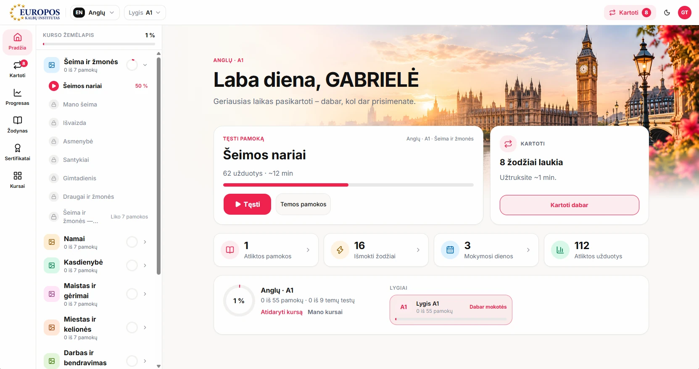

codeart.lt · 1 groteskas + 1 monospace · 1 akcentas · 3 dėmių tonai · 1 iliustracija · 4 px tarpų žingsnis · 12 kolonų
bg/base
#F6F0E6 · hero, 02, 04, 06
bg/raised
#FBF7F0 · 01, 03, 05
surface
#FFFFFF · rėmeliai, laukai
line
#DDD2C1 · skirtukai
line/frame
#D3C8B6 · naršyklės rėmelis
line/input
#8F8577 · 3.6:1 ant baltos
text/primary
#1C1A17 · antraštės, line/strong
text/body
#36322D · tekstas
text/muted
#5B544C · 6.4:1 ant bg/base
text/meta
#6A635A · žymos, numeriai
accent
#A9502F · 5.4:1 su balta
accent/hover
#8C4229 · hover, pressed
blob/sand
#EEDFC6 · lojalumo sistema, hero (#ECDDC4)
blob/lavender
#EBDCE1 · TikMaker
blob/rose
#F2D9D3 · kalbų platforma
blob/apricot
#F2DDCB · „Apie mane“
Visi tonai ~1.1–1.15:1 su fonu: matomi, bet nekonkuruoja su akcentu ir tekstu. Vienalytė spalva, be gradientų, šešėlių ir švytėjimo.
Akcentas naudojamas tik mygtukams, nuorodoms ir aktyvioms būsenoms. #D9734E su baltu tekstu duoda 3.3:1, todėl naudojamas tamsesnis tonas.
Schibsted Grotesk 400/500/600 antraštėms ir tekstui. JetBrains Mono 400/500 tik žymoms, datoms ir numeriams. Dydis/eilutės aukštis px; mobile reikšmės skliaustuose.
Sekcijos 128 (mobile 64). Antraštė → turinys 48 (32). Projekto eilutė 96 viršuje ir apačioje (mobile 48/56), kad dėmė neužliptų ant skirtuko linijos. H1 → lead 24, lead → mygtukai 40.
Konteineris 1280, paraštės 40 (mobile 20), turinys 1200. 12 kolonų po 78, tarpas 24. Hero: tekstas 1–5, scena 6–12. Projektas: tekstas 1–4, ekranas 6–12. Paslaugos 3 × 4, žingsniai 4 × 3, DUK 3–10. Mobile: viena kolona, riba 760 px.
h52 · px26 · r6 · 18/500 · nav variantas h44 px18 · focus: 2px #1C1A17, offset 2
min-h 44 · Nav/Active linija 1.5px slenka tarp nuorodų 320 ms · numeris Mono 13/20 + tarpas 16
Pavadinimas
Tipas
Vienas sakinys apie projektą.
React · TypeScript
Ekranas col 6–12 · BrowserFrame: 1px #D3C8B6, r12, juosta 26 px, langas 19:10, šešėlis 0 24 48 −30 · Dėmė: SVG kelias, išlenda 40–72 px, kiekviena projekte kitokia forma ir tonas · Hover: dėmė rotate ±2° + scale 1.025 per 400 ms, ekranas lėtai slenka žemyn 1400 ms · prefers-reduced-motion: jokio judesio

LaptopMockup: dangtis #232220 su 1.5px #CFC8BC kraštu, r16/4, rėmelis 10 px · pagrindas 14 px, 114 % dangčio pločio · Augalas: kairėje, už kompiuterio (z 1 < 2), apačia sulygiuota su pagrindu, 320 px · mobile augalas nerodomas
Hero · 360 px
Kontaktas · 200 px
Vienintelis dekoratyvinis objektas, daugiausia 2 vietos puslapyje · alt="" ir aria-hidden · /portfolio ir A4 nenaudojamas · plant.webp, permatomas fonas, be filtrų ir spalvų keitimo
Atsakymas, body 18/28, apačioje 24.
<button aria-expanded> · min-h 64 · 20/28 · ikona + pasisuka 45°, 240 ms
etiketė virš lauko 15/22/500 · laukas h48 · px14 · r6 · 18/400 · klaida: tekstas po lauku, ne tik spalva
< 760 px · juosta 64 px · mygtukas 44 × 44 toje pačioje vietoje (☰ ↔ ×) · nuorodos 32/40/600, eilutė 64 · apačioje LT / EN + pilno pločio mygtukas